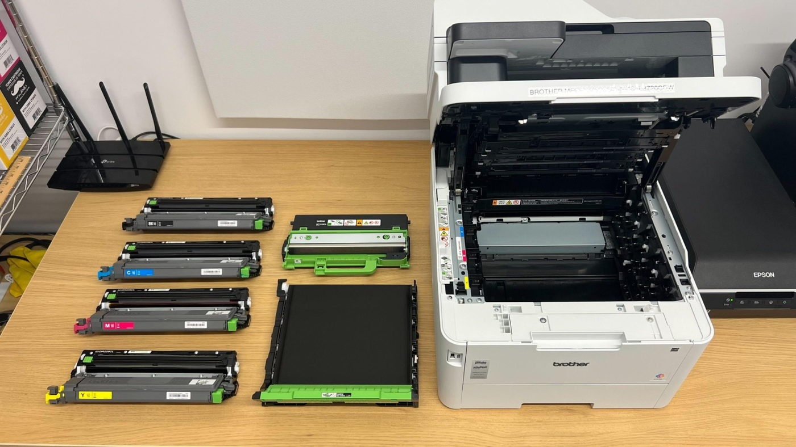

Mürekkep Kartuşları ve Mürekkepler
Mürekkep püskürtmeli yazıcılar, tanklı cihazlar ve plotter sistemleri için kartuş, mürekkep, baskı kafası ve ilgili sarf ürünleri.
Lazer yazıcı ve fotokopi cihazları için orijinal ve muadil tonerler, drum üniteleri ve diğer baskı sarf malzemeleri.

VK Bilgisayar olarak lazer yazıcı ve fotokopi cihazlarında kullanılan toner ve baskı sarf malzemelerini tedarik ediyoruz.
Siyah-beyaz ve renkli baskı sistemleri için orijinal ve uyumlu muadil ürün seçeneklerini; cihaz modeli, ürün kodu ve kullanım ihtiyacına göre değerlendiriyoruz.
Cihazınızın marka ve tam modelini, mevcut toner veya sarf malzemesinin ürün kodunu, renk bilgisini ve ihtiyacınız olan adedi paylaşabilirsiniz.
Mürekkep püskürtmeli yazıcılar, tanklı cihazlar ve plotter sistemleri için kartuş, mürekkep, baskı kafası ve ilgili sarf ürünleri.
Kurumsal kullanım için yazıcı, fotokopi ve plotter cihazları; 3D yazıcılar, uyumlu filamentler ve baskı reçineleri.
Ofis kâğıtları, yapışkanlı etiketler, termal rulolar, plotter kâğıtları ve geniş format baskı malzemeleri.
Orijinal, muadil ve dolum toner arasındaki farkları, seçim kriterlerini ve dikkat edilmesi gerekenleri öğrenin.
Rehberi inceleYazıcınıza uygun toner veya kartuşu bulmak için model adını, ürün kodunu ve kutu üzerindeki bilgileri nasıl okuyacağınızı öğrenin.
Rehberi inceleLazer ve mürekkep püskürtmeli yazıcıların farklarını, hangi kullanım için hangisinin uygun olduğunu ve sarf malzemesi türlerini öğrenin.
Rehberi inceleHP LaserJet toner kodlarındaki harf ve rakamların anlamını, standart ve yüksek verimli seçenekleri ve doğru ürünü bulma adımlarını öğrenin.
Rehberi inceleBrother yazıcılarda toner (TN) ve drum (DR) ünitesi arasındaki farkı, mürekkep serilerini ve doğru kodu bulma adımlarını öğrenin.
Rehberi inceleCanon yazıcı ve fotokopi cihazlarında toner ve kartuş kodlarının (CRG, C-EXV, PG, CL, GI) anlamını ve doğru ürünü bulma adımlarını öğrenin.
Rehberi inceleLazer yazıcılarda toner kartuşu, drum, developer, transfer ve fuser parçalarının görevlerini ve sipariş öncesi kod kontrolünü öğrenin.
Rehberi inceleYazıcının marka ve tam model bilgisini, mümkünse mevcut toner koduyla birlikte iletin. Uygun ürün seçeneği teklif aşamasında kontrol edilir.
Tercihinizi yazıcınızın kullanım yoğunluğu, baskı kalitesi beklentiniz ve bütçenizle birlikte değerlendirebilirsiniz. Her iki seçenek için de uyumluluk ve bulunabilirlik bilgisi teklif sırasında teyit edilir.
Evet. Siyah ve renkli tonerlerin kodlarını ve her birinden istediğiniz adedi talebinizde belirtebilirsiniz.
Evet. Her yazıcı modeli için toner kodunu ve adedi ayrı satırlar halinde yazmanız yeterlidir.